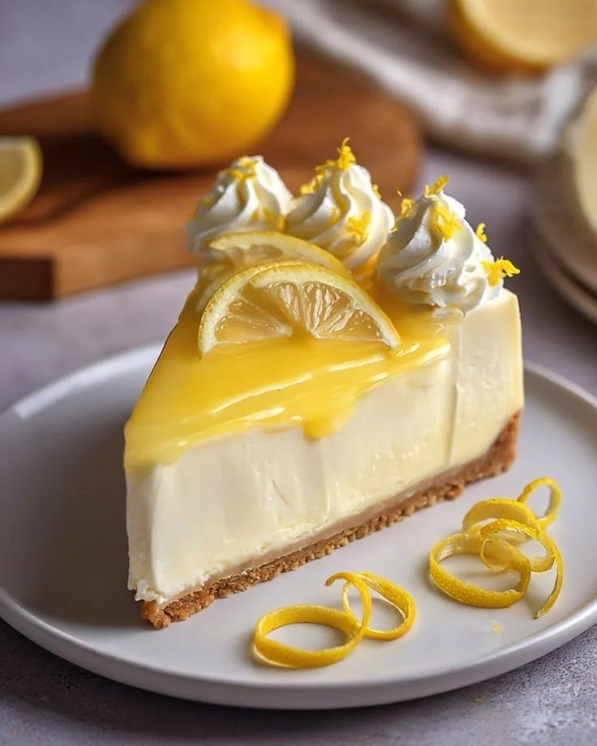

چیز کیک پسته
- بیسکویت - کره - پنیر خامهای - خامه - شکر - پسته - وانیل - ژلاتین - تخممرغ

چیز کیک کدو حلوایی
- بیسکویت - کره - پنیر خامهای - پوره کدو حلوایی - خامه -شکر - تخممرغ یا ژلاتین - وانیل - دارچین - جوز هندی

چیز کیک اورئو
- بیسکویت اورئو - کره - پنیر خامهای - خامه - شکر - وانیل - ژلاتین یا تخممرغ - پودر اورئو

چیز کیک لوتوس
- بیسکویت لوتوس - کره - پنیر خامهای - خامه - کرم لوتوس - شکر - وانیل - ژلاتین یا تخممرغ

چیز کیک شکلاتی
- بیسکویت - کره - پنیر خامهای - خامه - شکلات تختهای یا پودر کاکائو - شکر - وانیل - ژلاتین یا تخممرغ

چیز کیک بلوبری
- بیسکویت - کره - پنیر خامهای - خامه - شکر - بلوبری Blueberry - وانیل - ژلاتین یا تخممرغ
 packages cream cheese, softened_1 cup.jpg)
چیز کیک توتفرنگی
- بیسکویت - کره - پنیر خامهای - خامه - شکر - توتفرنگی Strawberry - وانیل - ژلاتین یا تخممرغ

چیز کیک گیلاس
- بیسکویت - کره - پنیر خامهای - خامه - شکر - گیلاس Cherry - وانیل - ژلاتین یا تخممرغ

چیز کیک لیمو
- بیسکویت - کره - پنیر خامهای - خامه - شکر - آب لیمو - پوست لیمو - وانیل - ژلاتین یا تخممرغ